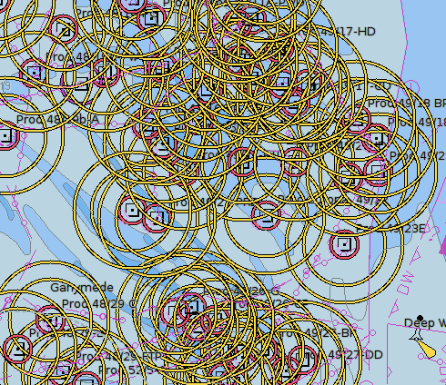
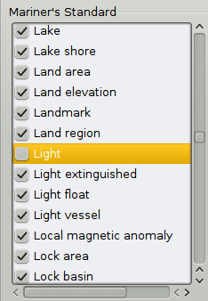
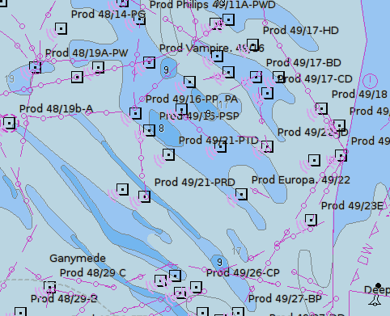
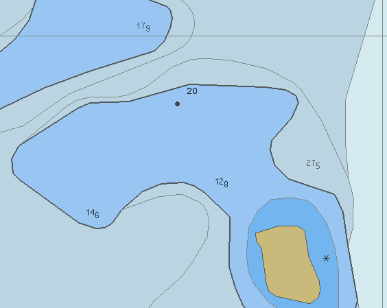
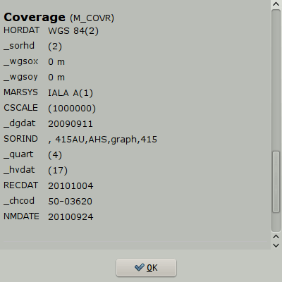
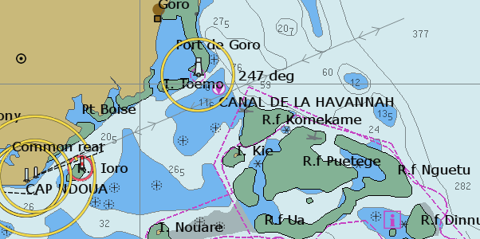
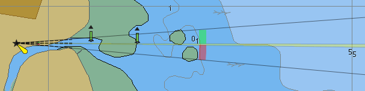
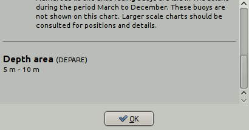
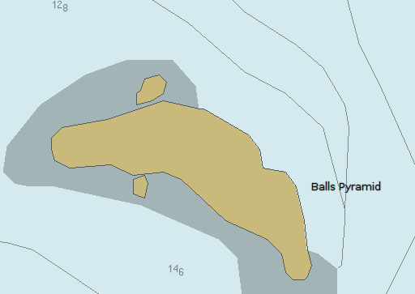

Vector Display Tab
OpenCPN makes a serious effort to be compliant with IHO standards for ECDIS display of cartography.
First One very important setting for vector charts is handled directly from the main toolbar.
This button toggles all text displayed on a vector chart On and Off. The hotKey “T” is an alternative for toggling the text. In OpenGL mode, all text will always be horizontal when using the “Course Up” option.
Second Double clicking on a vector chart, as long as the cursor hasn't changed to a green arrow near the edges, brings up an information dialog, displaying the available vector-chart information at the selected point. Scroll down to see all the information. An alternative to double clicking is right-clicking an select “Object Query”. Note that a single normal (left) click will center the chart at that point.

The example shown above is the result of double-clicking on a lighthouse in a busy area.
Exactly what is shown in this dialog depend on the settings described below in “Display Categories”.
Third It is possible to select what font is used for the text on vector charts. There is an entry in ToolBox > Languages-Fonts > Choose Fonts tab, called ChartTexts. Here you select what font-face to use, and a template size. Weight and final size of the displayed texts depends on the charts you are using, but if the charts contain various weights and sizes, they will all scale together depending on what size you select.
Options-Charts-Vector Charts Tab is where everything else is handled.
If the S63 chart plugin is active, there will also be a “S63 Charts” tab. Read more about S63 Vector Charts, when you have read this page.

Display Categories
If you are new to OpenCPN and vector charts please start with the “All” Display Category, to avoid risks and possible confusion. The Display Category is selected from the drop down menu. More below.
Navigators has the choice of three pre-defined, different, presentations of ENC content, Base, Standard and All. OpenCPN also has the very flexible Mariners Standard, which is better described as “Mariners Choice”.
Base
- Displays general information, including coastline, safety-contour, isolated danger,
- buoy, beacon traffic separation zone, etc.
- From the IMO definitions:
- Display Base means the level of SENC information which cannot be removed from the display, consisting of information which is required at all times in all geographic areas and all circumstances. It is not intended to be sufficient for safe navigation.
Standard
- Everything in “Base” and aids to navigation, fairways, channel limits, restricted navigation zones, restricted areas, etc..
All
- Everything in “Standard” and more. This level shows all informatio, not contolled in other settings options. More about what the IMO ECDIS says about the content of these three levels. This is also a good choice for actual, underway, navigation, avoiding the possible risks involved in “Mariners Standard”. See more below.
Mariners Standard
- Reset to STANDARD button. Change the tick marks to match STANDARD.
- Select All button. Select all items.
- Clear All button. Clear all items.
- These buttons only work with Mariner's Standard.
- Users can use the filter tick box to set the display of items. A large set of filters, about 186, can be employed. They are all to the IHO S57 standard, but has been given a label that is easy to understand.
- Note that Mariners Standard gives the user a much wider choice of what to display, however it conforms to the approved IHO recommendations.
- NOTE: We now follow strictly the IHO recommendations. This modification will appear in the next OCPN Beta series. See FS#2091
- Items classed as DISPLAYBASE are always displayed in Mariners Standard, and may not be removed by the user.
- Following S52 guidelines, four special safety items (“OBSTRN”, “WRECKS”, “DEPCNT”, “UWTROC”) are also visible in BASE and Mariners Standard, if their attributes (depth relative to containing depth area, mainly) require them to be so displayed.
- The selected Safety Contour is always displayed in Mariners Standard.
- User is free to add/remove items whose classification would normally have them appear in STANDARD or OTHER categories, allowing user customization if desired. These selections will be persistent across OCPN sessions.
- There is a “Reset to STANDARD” button, which does what it says.
These Hot Keys all work in “Mariners standard”. Features are toggled on-off with the keys.
Note: Hot Keys can be different for OS's. See Keyboard Shortcuts
- T Texts. The visible text is still affected by the settings in the Vector Charts settings tab.
- L Lights. Lighthouses as well as buoys etc are all affected.
- S Soundings.
- A Anchoring. This will affect information needed when anchoring. Anchor berth and Anchorage areas. Submarine cables and pipelines. Type of bottom. Mariners Standard -Anchor berth and Anchorage area display categories.
- O Chart Outlines.

WARNING - it is possible to suppress essential information with “Mariners Standard”. If in doubt, switch to the “ All ” Display Category, or use the “Select All” button for Mariners Standard.
- The first time you use a vector chart with a brand new installation you will see nothing, if you use Mariners standard. Why?
- The Mariners Standard list of Feature types is empty on a fresh install. When you load the first vector chart, the list is populated with the Features that are discovered on that particular vector chart.
- The default visibility of the added Features in Mariners Standard category now shows all features as the are discovered.
- If you load another ENC, any newly discovered Feature types are added to the list, again with viz=0, off. However, the visibility of Feature types as set previously by the tick boxes is not modified.
- Use the “Select All” button frequently until you have initiated all the charts you intend to use and-or the feature list is fully populated.
Vector Palettes
It's possible to change the whole look of a vectorchart. One example below….
Detailed information is available in Vector Palette
Practical Use
A general recommendation would be to use the “All” display category or “Mariners Standard” with “Select All” marked , and then switch of certain features as required. As an example let's look at passing through the British gas fields in the SW North Sea

This is not easy, so we want to get rid of all those red and yellow circles.
Double click on one of the platforms, square with a dot.
At the top it reads “Light (Lights)”, which means that you clicked on a light, which belongs to the Feature Class “Lights”. Find “Light” in the Mariners Standard list of available filters, and untick it.

Press the “Apply” button

Much better In this particular case, there is a shortcut which does the same thing.
Use the Hot Key “L” to toggle all lights on/off.
Display
Depth Soundings turns the depths on and off. Other settings also affects when soundings are displayed, for example “Reduced Detail at Small Scale”. The dark black numbers are not soundings. Instead they refer to heights of nearby islets or cays. On official paper charts the soundings are printed in italics.

The bold number 20 refers to the land height of the unnamed cay SW of the number.
Safety Depth is set to 20 m, so the 20 m contour stands out in black.
How soundings behave when zooming. “Chart sounding symbols” are represented by small raster images. As a chart is zoomed in, these raster symbols will increase in size by about 2x. Currently they increase in size well after the “Overzoom” notice, for the largest scale chart available.
Chart Information Objects relates to information about the chart itself. With this switch on, an object query reveals such information as the buoy system for the area, the quality of the survey, the latest NTM update and sources for the chart.

Buoys-Lights
Bouy-Light Labels Displays names and purposes of aids to navigation, such as number or name of buoys, information about conspicuous objects etc.
Light Descriptions This tick box control display of light characteristics. Checking this displays a label with a text describing the marker or lighthouse's characteristics.
Extended Light Sectors It is often difficult, on a vector chart, to see exactly what the light-sectors are supposed to do.

Activating the Extended Light sectors clarifies the situation. All sectors are extended and leading white sectors are emphasized in yellow and extend the full nominal range of the light. Just hold the cursor over a light and the extended sectors are activated.
Light sectors as narrow as 0.3° are displayed.

This sector is 0.5°.
A light sector is extended if:
The words “Leading” or “Directional” can be found in the Object Query.
Otherwise, the rules are
- The sector is < 15° wide.
- It is White.
- The light also has Red and-or Green sectors.
These rules work quite well, but there are exceptions that are difficult to catch.
As always, it's the responsibility of the navigator, how a light and its sectors are used for practical navigation.

The parameters above are described in more detail below.
Chart Text
National text on chart. Vector charts may have attributes with the texts in the national language. For example a Russian chart with texts in Cyrillic. With this option activated OpenCPN will display text in the local language and character set, in this case Russian written in Cyrillic.
Important Text Only displays only a bare minimum of text essential for navigation, such as course and bearing in a leading line (range) and bridge clearances.
De-Cluttered Text. Even when using “Reduced Detail at Small Scale”, there are cases when text labels overlaps or overwrites other labels and creates a cluttered impression. Ticking this box tries to clear the view. This setting may hide needed information.
Chart Detail
Reduced Detail at Small Scale makes sure that a minimum scale is required before certain objects are shown. If this box is not ticked, everything is always shown, leading to very cluttered view at small scale (zoomed out).
Graphics Style
Paper chart draw the markers and lights just like the printed paper chart, while Simplified uses icons to represent the same. Some like the one and some the other, a matter of taste. Paper Chart mode closely follows the IHO standard standard in this area. This mode is currently more developed than the simplified mode, as it has a higher priority in the development effort.
Boundaries
Plain normally just uses a dashed line, while the
Symbolized version also uses triangles pointing into the area.
Colors
Depth on the chart can be displayed with either 2 or 4 colors. This setting is closely related to the “Depths Settings”. With 2 colors, and using a relatively large scale, areas with depth less than “Safety Depth” is blue, the rest is white. With 4 colors, there are different colors for areas less than “Shallow Depth”, areas between “Shallow Depth” and “Safety Depth”, areas between “Safety Depth” and “Deep Depth” and finally for areas deeper than “Deep Depth”.
Depth Settings
Units for depths is set in Options > Display > Units. All depths units are rounded off to the nearest number. If the value is half way between, the nearest higher number is used. Underlined values indicates drying heights.
Feet Only whole digits are shown. A value of 12 feet covers all soundings between 11.5 feet and 12.4 feet.
Meters
Meters are show as whole numbers for depths greater than 30 m. Depths below 30 m are shown as whole meters and decimeters as subscript, like this 127 This is the same as 12.7 meters and is shown for all soundings between 12.65 m and 12.74 m.
Fathoms
Fathoms are shown as whole numbers for depths greater than 31 fathoms. Depths below this value are shown as whole fathoms and tenths of fathoms as subscript. Compare to the notes above for meters.
Shallow, Safety and Deep depths
These settings are very important as they affect how the different depths are colored. They can help you identify a deep channel for example, or they can, in the worst case scenario, prevent you from being aware of a shallow area. There is no setting that fits all circumstances. For example a Sea Mount with a depth of 20m in the middle of an ocean should be regarded as “shallow” and be avoided, while 20 m depth in a harbor approach in protected water, probably is safe. The Depth Settings controls the coloring of the water as a function of depth. By setting the Safety and Deep water right you will have a visible border to show when to take care about shallow water.
CM93 charts and ENC works very similar in this area. The charts contains depth area features according to fixed depth cutoff zones, usually 5, 10, and 20 meters. Intermediate values are not available in the database,if you select a value between those available, OpenCPN chooses the next higher value available for display of color.
The charts are inconsistent in this area, depending on the country issuing the original charts.
For example in UK and the Netherlands the depth contours in CM93 are 2, 5 and 10 meter while in US the are based on feet but expressed in meters, such as 3.7, 5.5, 9.1 and 18.3 m.
Generally for both ENC and CM93, find these fixed depth cutoffs by double-clicking so the Object Query dialog pops up. The last entry is usually Depth Area. The two values in the range, represents these built in cutoffs. 
An example from UK with cutoff values of 5m and 10m. If for example as is the case on the South China Sea Hydrographic Commissions charts, the shallowest area has a range “0 m - 10 m”, there is, in most cases, no point in setting “Shallow Depth” to anything but 10 m. Find out these cut off depth for your area and set the “Depth Settings” with this knowledge together with your preferences and activity.
With all the reservations above, the general case for 4 colors, will be described.
Shallow Depth
Will color all water areas with water depths shallower than the set depth to a dark blue color. Soundings are in black.
Safety Depth
Water deeper that Shallow but shallower that this depth will have a paler blue color. The Shallow Depth contour clearly marked with a thicker black borderline. Soundings less than this depth are in black, while soundings greater than this value are gray.
Deep Depth
Water deeper than Safety Depth but less than Deep Depth will display a light gray color. The Safety Depth contour is clearly marked with black borderline. Water deeper than Deep Depth is displayed in white.
Finally a word about drying heights, displayed in green. There is no detailed information available for drying heights, neither in CM93 ver2 nor in many ENC charts. Some ENC charts have negative ranges, for example “-2 m - 0 m” in areas with drying heights. This adds very little, as it really only gives the information that the drying height is less than the first value in the range, in an area of unspecified size.
This situation is changing though. A set of new charts released in april 2012, by the Dutch Authorities, sets a standard for others to follow in this regard. See picture below. Modern Australian S63 charts are equally good.
While a raster chart tells us that we need a Height of Tide that is 1.2m + safety margin + the draft of our own vessel.

Heights of islands etc. are not available in CM93, while ENC charts, in many cases, have info about heights of summits and some contour lines. Is Balls Pyramid a high Island, that the name implies, or is it named with the same sarcastic humor as “Greenland” ? CM93 can't tell.
CM93 Detail Level
The CM93 charts slider control that allows the user to adjust the screen complexity to suit the actual situation as well as the available processor capability.
Normal settings depend on a combination of personal preferences and present usage of map. To see more details, the “CM93 Detail Level” slider, can be set to a higher positive number or for navigation in shipping lanes to a negative numbers. Typical zoom level 5 is good for fishing when as much details are possible is of interest. Zoom level of +1, zero or -1 is usually fine for normal use.
Positive values give more detail, but at a cost:
- It simply takes longer to render larger scale charts covering more screen real estate.
- There will be more instances of gray (NODATA) areas surrounding the larger scale charts as you zoom out, unless quilting is activated.
- It can become dramatically slower if high detail is specified, and chart outlines are requested. In this case, the program has to read a lot more cells to get their outlines.
- Conversely, negative values give less detail. Zooms are faster.
- The slider can also be activated through the “d” hotkey, and displayed directly on the screen.